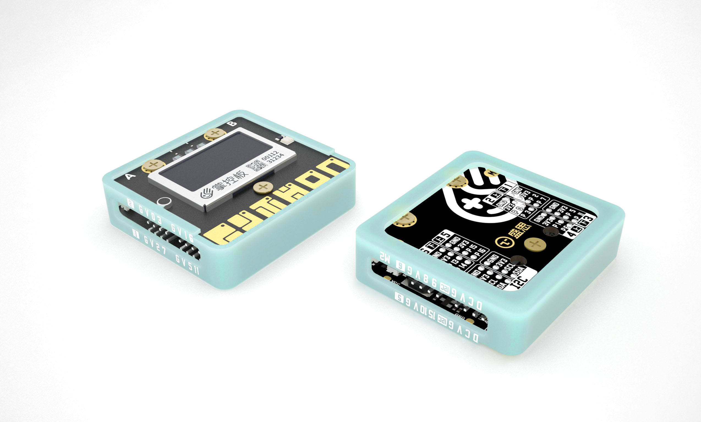

掌控拓展板介绍¶
概述¶
掌控拓展板(parrot)是掌控板衍生的一款体积小巧、易于携带的拓展板。支持电机驱动、语音播放、语音合成、红外发码（可学习）等功能的IO引脚扩展板,可扩展12路IO接口和2路I2C接口。 通过连接掌控板，带来更加丰富多元的物联网应用与编程体验，你的奇思妙想也将进一步获得延伸，激发你的创意，造起来！
技术参数¶
该板具有以下特性:
- 两路DC马达驱动,单路电流150mA
- 支持音频功放和喇叭输出(掌控板P8，P9引脚)
- 支持文字转语音(Text To Speech)的语音合成
- 扩展12路IO接口、2路I2C接口
- 红外发码，可支持红外学习功能
- 体积小巧、便携,易于携带
- 支持锂电池供电和外接USB电源供电两种方式
- 内置330mAH锂电池,支持锂电池循环充电
- 工作电压:3.3V
- 最大输出电流: 1A@3.3V 2A@VCC
- 充电电流: 最大170mA
接口说明¶
{kind=link}
电源指示灯状态:
- 电源输出指示功能: 3.3V输出,指示灯亮;无输出则灭。
- 电池电量指示功能: 通过闪烁次数反馈电量,4档电量显示。
充电指示灯状态:
- 充电指示功能: 充电中,指示灯闪烁；充满,指示灯熄灭；
VCC: VCC电源区别与其他3.3V电压电源。提供3.3V以上更高的电压和更大的电流驱动。用于应付较大的驱动需求。电源路径管理,当没接USB充电时,VCC由电池电压直接提供；接上USB充电时,VCC由USB提供电源。
{kind=link}
使用说明¶
功能说明¶
电机驱动
掌控拓展板支持2路的PWM电机驱动(掌控拓展板背面标记M1和M2)，你可以接入直流电机马达(如TT马达、N20)和LED灯(满天星灯带)
I/O
掌控拓展板左右两侧扩展出12路I/O接口、2路I2C接口。可以通过这些接口接入经典的传感器输入模块，输出模块。例如：按键、人体红外、超声波、LED、马达、蜂鸣器、数码管…… 拓展板扩展引脚有P0、P1、P2、P3、P5、P6、P7、P11、P13、P14、P15、P16、P19(SCL)、P20(SDA)
Important
- 由于P5、P11是掌控板的按键A、B的IO引脚,为避免冲突,限定拓展板的P5、P11引脚只能用于数字电平输入,且拓展板会对输入电平进行翻转。在使用时,须重点注意！
- 内置锂电池只提供有限的驱动能力，如需驱动较大功率器件或者长时间稳定的应用。建议采用外接USB，外部供电。
喇叭—音频播放
掌控拓展板内置喇叭,支持音频播放。
语音合成(TTS)
将文本转化为文字，让机器能够说话。这样就可以给掌控板添上“嘴巴”。比如在程序内输入你想要说话的内容，让它说给你听。
红外发码
掌控拓展板内置红外收发管，支持NEC编码的红外发码。还支持红外学习功能。